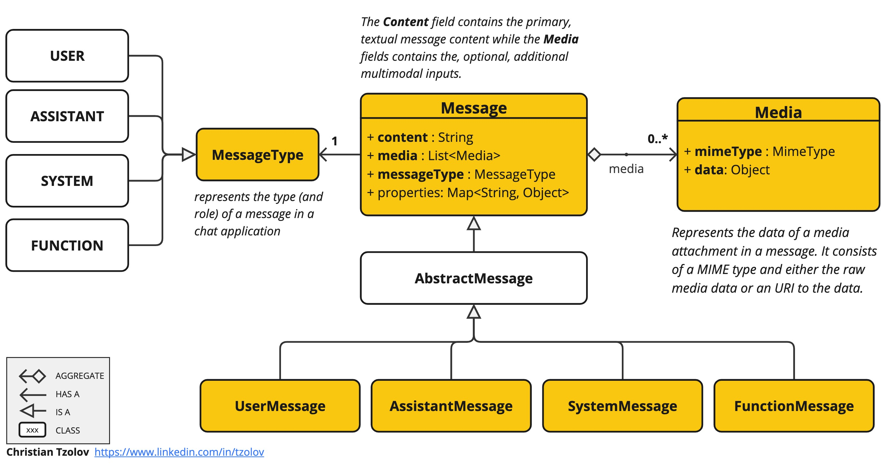

1. Intro
|
2. Multimodality

|
-
将图片作为输入，并要求LLM解释它在图片中看到的内容：
byte[] imageData = new ClassPathResource("/multimodal.png").getContentAsByteArray();
var userMessage = new UserMessage(
// content
"Explain what do you see in this picture?",
// media
List.of(new Media(MimeTypeUtils.IMAGE_PNG, imageData)));
ChatResponse response = chatModel.call(new Prompt(List.of(userMessage)));-
OpenAI：GPT-4 Vision，GPT-4o
-
Ollama：LlaVa，Baklava；
-
Vertex AI Gemini：gemini-pro-vision；
-
Anthropic Claude 3；
-
AWS Bedrock Anthropic Claude 3；